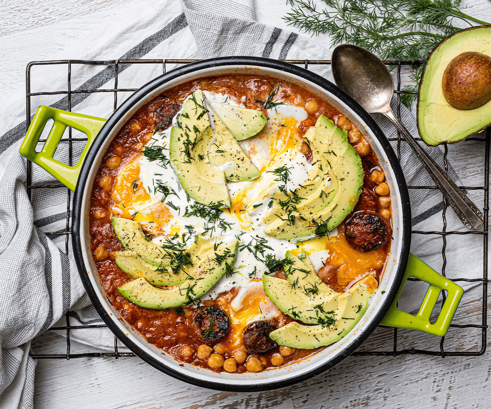

Favoritos de mi cocina
¡Ispírate con lo que más te gusta cocinar!
CHEESSCAKE DE FRESA
PAN INTREGAL CON PALTA Y TOMATE

SHAKSHUKA CON PALTA
CHESCAKE DE LIMÓN
WRAP DE TORTILLA CON PALTA Y HUEVO

RAMEN TONKOTSU

MACARONS FRANCESES

OPERA CAKE